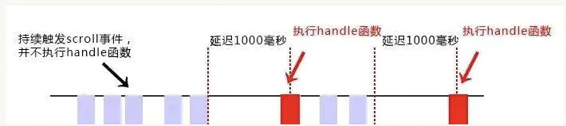
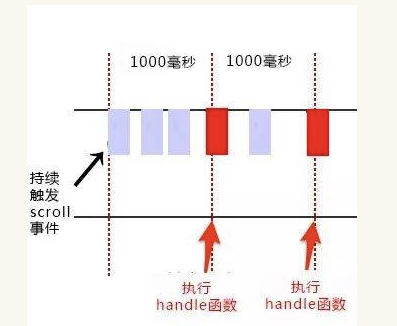

let,const,var的区别
let
- let声明的变量不存在变量提升的问题，必须遵循 “先声明，后使用”否则会报错。但用var声明不会出现报错。
- let声明的变量，存在块级作用域。let声明的变量只在所声明的代码块内有效，块级作用域{}，包括if和for
- let不允许在同一作用域内重复声明同一个变量，var在同一个作用域内声明同一个变量后面会覆盖前面的，但是let会报错。
- 存在暂时性死区，在代码块内使用let声明变量之前，该变量是不可使用的。只要在作用域内使用let命令，那么所声明的变量就被”绑定”在作用域内，不管在外部有没有声明。
在ES6中，如果在代码块内使用let和const都存在暂时性死区，都必须遵守 “先声明，后使用”的规则。
ES6规定，暂时性死区不存在变量提升的问题，主要是为了解决”先使用，后声明”带来的问题。只要进入暂时性死区，变量就已经存在，但是必须要等到声明完了之后才可以获取和使用。
const
- const用来声明一个常量，一旦声明其值不可更改。所以const在声明的时候必须要初始化，不能先声明再初始化否则会报错。
- const声明的变量只在块级作用域内有效。
- const声明的变量存在暂时性死区。
- const在同一个作用域内不可重复声明变量
- 但是用const声明的对象的属性是可以更改的，因为const实质上保证的并不是变量的值不得改动，而是变量指向的内存地址的值不得改动。对于简单类型数据，值就保存在变量指向的内存地址中，相当于常量。而对于复合型的数据，变量指向的是内存地址保存的是一个指针。const只能保证指针是不可以被更改，但指针指向的数据结构是可以被改变的。
了解闭包
什么是闭包
闭包的作用: 正常函数执行完毕后,里面声明的变量被垃圾回收处理掉,但是闭包可以让作用域里的 变量,在函数执行完之后依旧保持没有被垃圾回收处理掉
闭包实例
// 创建闭包最常见的方式函数作为返回值
function foo() {
var name = "xjh";
return function() {
console.log(name);
};
}
var bar = foo();
bar(); //打印xjh --外部函数访问内部变量闭包应用
for循环打印
//方法一: for (var i = 0; i < 4; i++) { setTimeout( (function(i) { return function() { console.log(i); }; })(i), 300 ); } // 或者 for (var i = 0; i < 4; i++) { setTimeout( (function() { var temp = i; return function() { console.log(temp); }; })(), 300 ); } //这个是通过自执行函数返回一个函数,然后在调用返回的函数去获取自执行函数内部的变量,此为闭包 //方法发二: for (var i = 0; i < 4; i++) { (function(i) { setTimeout(function() { console.log(i); }, 300); })(i); } // 大部分都认为方法一和方法二都是闭包,我认为方法一是闭包,而方法二是通过创建一个自执行函数,使变量存在这个自执行函数的作用域里setTimeout场景
//原生的setTimeout传递的第一个函数不能带参数 setTimeout(function(param){ alert(param) },1000) //通过闭包可以实现传参效果 function func(param){ return function(){ alert(param) } } var f1 = func(1); setTimeout(f1,1000);
防抖节流
防抖：
当持续触发事件时, 一定时间内没有再触发，事件处理函数执行一次，如果设定的时间到来之前，又一次触发了事件，就重新开始延时
假如期限值是200ms
1、在200ms 内没有再次触发事件，那么就执行函数；
2、如果在200ms 内再次触发了滚动事件，那么当前计时器取消，重新开始计时；

function debounce(fn,delay){
let timer = null;
return function(){
if(timer){
//进入该分支语句，说明当前正在一个计时过程中，并且又触发了相同事件。所以要取消当前的计时，重新开始计时
clearTimeout(timer)
}
timer = setTimeout(fn,delay)
}
}
//防抖debounce代码：
function debounce(fn,delay) {
var timeout = null; // 创建一个标记用来存放定时器的返回值
return function (e) {
// 每当用户输入的时候把前一个 setTimeout clear 掉
if(timeout){
clearTimeout(timeout);
}
// 然后又创建一个新的 setTimeout, 这样就能保证interval 间隔内如果时间持续触发，就不会执行 fn 函数
timeout = setTimeout(() => {
fn.apply(this, arguments);
}, delay);
};
}
// 处理函数
function handle() {
console.log('防抖：', Math.random());
}
//滚动事件
window.addEventListener('scroll', debounce(handle,500));节流
当持续触发事件时，保证一定时间段内只调用一次事件处理函数。
函数防抖(debounce)：触发高频事件后n秒内函数只会执行一次，如果n秒内高频事件再次被触发，则重新计算时间。
函数节流(throttle)：高频事件触发，但在n秒内只会执行一次，所以节流会稀释函数的执行频率。
节流主要有两种方法:时间戳和计时器

var throttle = function(fn,delay) {
var per = Date.now();
return function () {
var _this = this
var args = arguments;
var now = Date.now();
if(now-pre>=delay){
fn.apply(_this,args);
pre = Date.now()
}
}
}
function handle() {
console.log(Math.random());
}
window.addEventListener('scroll', throttle(handle, 1000)); 当触发事件的时候，我们设置一个定时器，再次触发事件的时候，如果定时器存在，就不执行，直到delay时间后，定时器执行执行函数，并且清空定时器，这样就可以设置下个定时器。
var throttle = function (fn,delay) {
var timer = null;
return function () {
var _this = this
var args= arguments;
if(!timer){
timer = setTimeout(()=>{
fn.apply(_this,args)
timer = null
},delay)
}
}
}箭头函数和普通函数的区别
箭头函数为匿名函数，不能为构造函数，不能使用new
let Demo = () => {
consolg.log('1')
}
let demo1 = new Demo(); //报错is a not constructor箭头函数不能绑定arguments, 取而代之用rest参数…来解决
function A(a){
console.log(arguments);
}
A(1,2,3,4,5,8); // [1, 2, 3, 4, 5, 8, callee: ƒ, Symbol(Symbol.iterator): ƒ]
let B = (b)=>{
console.log(arguments);
}
B(2,92,32,32); // Uncaught ReferenceError: arguments is not defined
let C = (...c) => {
console.log(c);
}
C(3,82,32,11323); // [3, 82, 32, 11323]箭头函数没有自己的this, 他会获取上下文的this作为自己的this值
var obj = {
a: 10,
b: () => {
console.log(this.a); // undefined
console.log(this); // Window {postMessage: ƒ, blur: ƒ, focus: ƒ, close: ƒ, frames: Window, …}
},
c: function() {
console.log(this.a); // 10
console.log(this); // {a: 10, b: ƒ, c: ƒ}
}
}
obj.b();
obj.c();var obj = {
a: 10,
b: function(){
console.log(this.a); //10
},
c: function() {
return ()=>{
console.log(this.a); //10
}
}
}
obj.b();
obj.c()();箭头函数通过call()或apply()方法调用一个函数时,只传入一个参数,对他的this没有影响
let obj2 = {
a: 10,
b: function(n) {
let f = (n) => n + this.a;
return f(n);
},
c: function(n) {
let f = (n) => n + this.a;
let m = {
a: 20
};
return f.call(m,n);
}
};
console.log(obj2.b(1)); // 11
console.log(obj2.c(1)); // 11
箭头函数没有原型属性
var a = ()=>{
return 1;
}
function b(){
return 2;
}
console.log(a.prototype); // undefined
console.log(b.prototype); // {constructor: ƒ}总结 箭头函数的this永远指向其上下文中的this